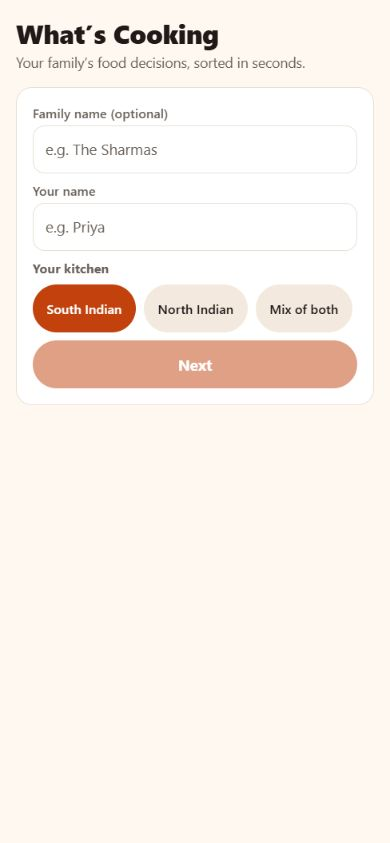
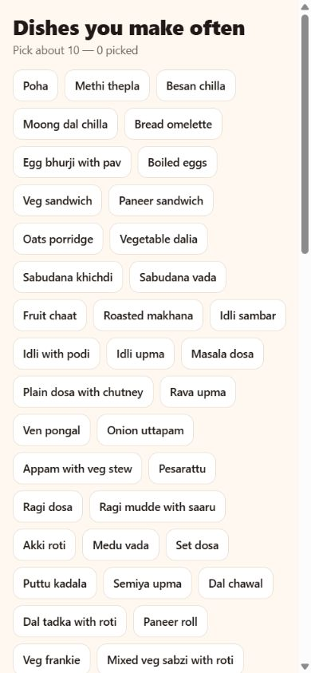
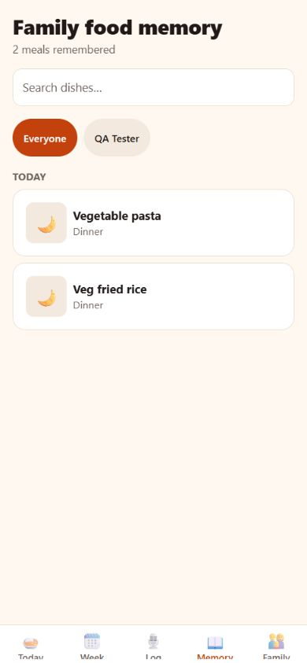

Live product review · 17 October 2026 · Desktop + 390 × 844
The basics are improving.
The first minute still needs work.
What’s Cooking now gives better validation and save feedback. The remaining work is to make first use useful, recoverable and inviting — with real history editing, family joining and accessible controls.
Required-name errors, flexible pickup-time validation, typed logging without a key and saved-action feedback.
Join family, direct history editing, selectable themes and a discoverable Reports section.
Bugs, feature gaps and expert usability findings are labelled separately. This is not a count of equivalent defects.
Your feedback, checked against the live app
| # | Request | Status | What the test found |
|---|---|---|---|
| 1 | Join a family | Missing | No join/invite entry in welcome or Family. |
| 2 | Edit meal history | Missing | Reactions and Delete only. Re-logging kept both dinners. |
| 3 | World cuisines | Partial | Some pasta/noodles exist; setup is regional Indian. Thai/pizza searches offered custom creation. |
| 4 | Phone / country validation | Unverified | No phone or country control exposed in tested planner/member/Cook forms. |
| 5 | Intuitive setup | Partial | Sequential screens exist; no progress map or result preview. |
| 6 | Opt-in fasting calendar | Partial | Switches default off, but calendar fields and “Rules applied: Navratri” still appear. |
| 7 | Tiffin pickup time | Present | Invalid time rejected; 3:30 pm normalised. Device reminder delivery untested. |
| 8 | Required / optional fields | Improved | Labels and required-name errors exist. Save/readiness conventions need consistency. |
| 9 | Hidden validation failures | Improved | Tested empty inputs, invalid times and blocked dishes gave feedback. |
| 10 | Quick steps / return later | Partial | Back and Skip exist. Refresh loses an unfinished setup. |
| 11 | Themes / light food-like default | Partial | Warm cream/orange already exists; no theme selector found. |
| 12 | AI-key instructions | Partial | One sentence and website name; no clickable beginner walkthrough. |
| 13 | Rich manual / text logging | Partial | Text saved with no key. Direct structured manual entry needs clearer access. |
| 14 | Reports | Missing | CSV export exists. No report/insights entry was found. |
A more inviting opening
Explore four proposed visual directions. These change this concept preview only; they do not modify your live app. The current cream palette is already a useful starting point.
DESIGN PROPOSAL · NOT IMPLEMENTED
Show the dinner.
Then ask the questions.
One appetising visual, one clear benefit and one main action. Let people join a family or preview the experience immediately.
Ask dietary boundaries before personalised recommendations. Keep the family name, calendars, cook logistics, themes and AI setup for later.
First Today screen: meal recommendation first; pantry, shopping and modifiers expand when needed.
A dinner everyone
can agree on.
Less deciding. More enjoying what’s on the table.
The example actions above are presentation elements. Only the theme controls are interactive. Palette proposals still require full contrast/state testing before implementation.
Make the first minute a useful one
Food-led preview, Start, Join and sample paths.
Explicit diet and allergies before personalised suggestions.
Multi-select cuisines, clear progress and Skip for now.
One meal, one reason, Plan this meal. Finish logistics later.
Prioritised observations
Evidence from the live app






Suggested repair order
- Reliability and access: setup drafts, true history editing, switch state/keyboard support and close targets.
- First-use experience: result-led welcome, explicit dietary setup, visible skip/progress, simpler Today hierarchy and clear action names.
- Delight and completion: complete theme system, genuine family joining, country-aware contacts, deeper cuisines and trustworthy reports.